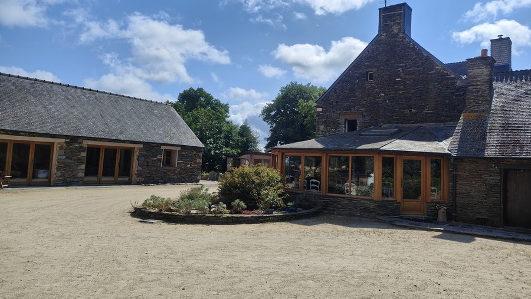
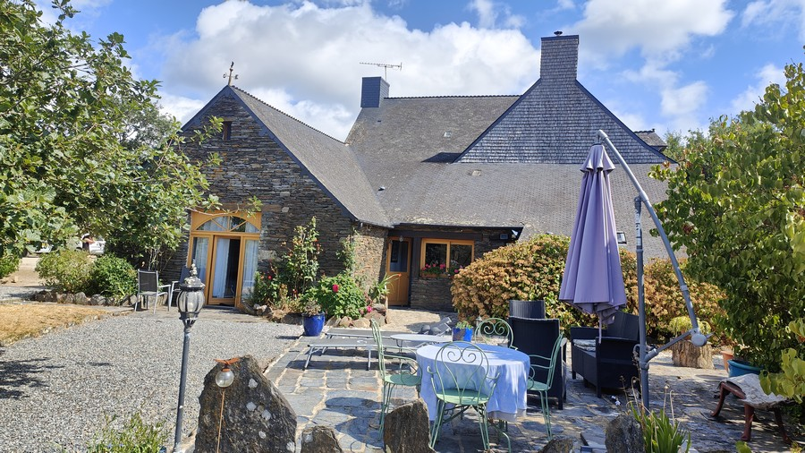

La propriété
Les extérieurs
Un parc d'un hectare, une cour bretonne, un four à pain et des animaux en toute liberté.
Vue du parc d'un hectare depuis la véranda. Une partie est occupée par un coin détente (jeux pour enfants) et un espace pique-nique (barbecue, table de repas).
À l'arrière de la maison, vous trouverez un four à pain et la véranda.


